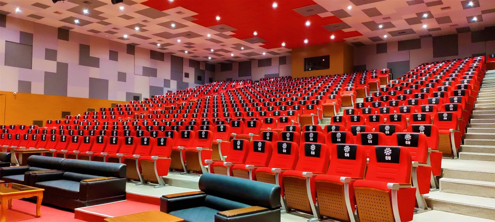
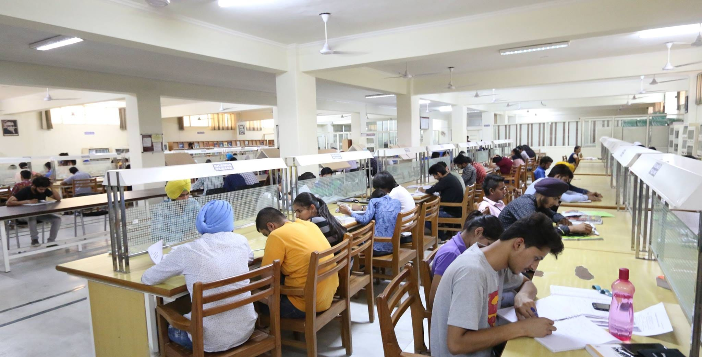
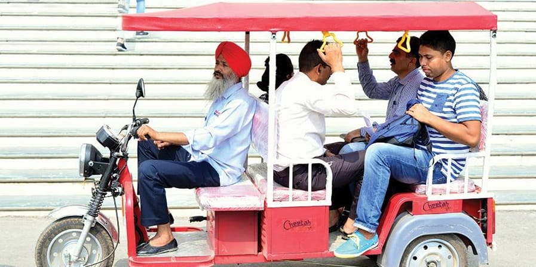

- We’re on your favourite socials!


Chandigarh University Expert's Review and Verdict
Campus at a Glimpse
Walking down the corridors of Chandigarh University in Mohali, you’d be easily confused whether you're in a college or a vibrant movie-set. A sprawling campus spreading across 200 acres greets you with bustling activity. On the look of it, CU has everything - world class infrastructure, diverse representation of students, partnerships & collaborations with domestic and international organisations & accolades galore. The faculty to student ratio stands at 1852:27297, which is about 6.7%! Even the gender percentage is well balanced with 48% male population and 52% female population with the total percentage of students from outside Chandigarh at 88%!Course offerings-wise too, CU offers many courses under its umbrella - Engineering & Architecture, Management - BBA/ MBA, Sciences (Chemistry, Physics, Maths), Arts & Humanities, Economics, Data Sciences, Hotel & Hospital Management, Microbiology, Design Tourism, Media Studies, Allied Health etc.
But hidden behind the hunky-dory picture remains the fact that students are left wanting for more in terms of internships, opportunities and placement help in lieu of the hefty fees they’ve paid at the time of admission. In terms of safety too, if news is to be believed, there have been incidents of breach of women’s privacy and cases of assault on students of Chandigarh University.
NIRF Ranking: From Good to Great!
Our Take on Overall Rankings
Chandigarh University has jumped 2 positions between 2022 and 2023, which clearly indicates the improvement across all metrics as defined by NIRF - Teaching, Learning and Resources (TLR) Research and Professional Practice (RP) Outreach and Inclusivity (OI).
|
Year |
Category |
Position |
Score |
|
2023 |
Best Universities in India |
45 |
53.29 |
|
2022 |
Best Universities in India |
48 |
50.39 |
|
2021 |
Best Universities in India |
77 |
44.62 |
Chandigarh University Academia & Batch Size:
Chandigarh University, because of its vast outreach in academia with a Flexible Choice Based Credit System (FCBCS) to enhance the learning experience of its students, includes Open electives to give them the opportunity to pursue exchange programmes abroad.
CU Academic Composition:
Students have confirmed that academia here is a mix of classroom, projects & assignments.
Our Take on CU Academia:
-
While the intent & process of education is good, students face challenges due to the huge batches per course.
-
With its popularity growing, it seems Chandigarh University has compromised on its quality enlisting more than 3K students in some batches!
-
Students claim that there is no end cap on admissions; as more and more students apply, CU just keeps increasing the classroom size dividing it into multiple sections, while keeping the teacher students ratio almost the same, which seriously compromises on the quality and attention per faculty to the students.
Chandigarh University Infrastructure:
Classroom - The classrooms at CU are basic with multiple seating - theatre, classroom etc and a seating capacity of up to 80 students! That’s a huge class. Smart classrooms are scarce and need to be booked in advance for usage due to the gap in demand and supply.

Internet connection: While CU claims to provide 8 MBPS internet speed, students claim that it hardly works. If at all, they can only connect their laptops. Wi-Fi is not available for all round usage.
Library - Each block has a library, so students have ready access to resource material throughout the day.

Commute within the Campus: Owing to the huge campus, students are expected to walk it everywhere! Although there are E-rickshaws available, there are hardly any rickshaw drivers around to ferry students across the campus (most of them being used by the faculty!)

Activities: Department activities are ongoing at small scales. Major events for student participation are their annual college fest only.
Hostel: CU offers 1,2, 3 and 4 seater AC/ non-AC hostel rooms separate for boys and girls. Basic facilities like bed, cupboards are available. Nothing fancy. Students say that the quality of drinking water can be improved, until of course, your system gets used to it! There are ethernet ports in the hostel rooms, but according to a student, for a 4-seater room, there are just 2 ethernet ports! Students can purchase their own routers though. But look at the fees they charge! It can burn a hole in your pocket for sure!

Here’s a glimpse of the hostel fees for the uninitiated!
|
Room Type |
AC Rooms |
Non-AC Rooms |
|
5 Seater (for Boys only) |
INR 138000 |
INR 106800 |
|
4 Seater (for boys and girls) |
NA |
INR 120000 |
|
2 Seater (for Boys only) |
INR 198000 |
INR 168000 |
|
1 Seater (for Boys only) |
INR 210000 |
INR 181200 |
Our Take - Why a 1-seater is available for boys only is something that even we are questioning!
Hang-Out Areas/ Cafes: Due to its large size, CU has multiple stationary shops & cafes, which, if not very expensive, is not cheap either. Students with limited budget might fight it a struggle to survive here:
|
Name |
Location |
Cool Quotient |
|
Punjabi Dhabha |
Near Block 3 |
This section has 4 to 5 dhabas in line to enjoy pure Punjabi lunch and side bites. |
|
Food Hub |
Main Campus Ground |
This has various outlets including Subway, Samosa Junction and Juju's Cafe. |
|
Creative |
Top floor of Block 9 |
Has many perks including an 8 ball pool, delicious food, video games including PS3/4 and an enormous seating, perfect for birthday parties and reunions. They also deliver food directly to your hostel rooms. |
|
Books N Cooks |
Near Engineering Block |
A tiny little place to hangout with friends, this also includes an 8 ball pool and dining of a reasonable capacity. Pretty amazing place to spend evenings and buzz of tension after hours. |
|
Nescafe |
Centre of the park, near Block 1 (UIC) |
This is a cute little booth to grab a coffee/tea and quick bites on the go before and after class. |
|
Maggi Hotspot |
Near Animation Block |
For Maggi lovers, this is it! Serving Butter Maggi, Jalapeño Maggi, Maggi Pizza and what not, it also has an ice cream parlour next to it! |
|
Food Court |
In between girls hostel and Block 9 |
This place has 8-10 exquisite reasonably-priced outlets for sudden food cravings like shakes and sandwiches, burger king, cafes, bakeries etc. |
|
Sip ’N Bite |
NA |
An amazing hangout during breaks and bunks, it has 3–4 outlets, which serve good quality food at reasonable prices including Indian, Chinese, Italian etc. Also it has La Pinoz pizza along with all the other outlets for quality Italian food. |
Chandigarh University Internships and Placements:
Internships:
CU offers multiple internship opportunities and if you are a smart student, you will just lap up the experience. But because the batch sizes are so huge, there are high chances of not getting an internship directly related to your line of study.
Placement:
Basis 2022 data, B.Tech & Management placements are top-notch at CU with all major companies visiting the campus. Sadly, other courses receive a rather step-treatment with scarce placement opportunities, with students having to look out for themselves or settle for a lesser CTC than was projected at the time of admission.
Course-wise Intake vs Placement:
Engineering & Architecture | Course Duration: 4 years
|
Intake Capacity |
Final Admissions |
Total Placements |
Median Salary |
|
3.24K |
3.23K |
1.54K |
7.50L |
Our Take: The placement percentage of B.Tech in CU has a lot of room for improvement with the placement percentage at just 0.045.
MBA & Business Management: Course Duration: 2 years
|
Intake Capacity |
Final Admissions |
Total Placements |
Median Salary |
|
660 |
660 |
529 |
7.63L |
Our Take: 88.17% students got placed from MBA & Business Management courses at Chandigarh University in 2022, which is fairly decent.
Pharmacy: Course Duration: 4 years
|
Intake Capacity |
Final Admissions |
Total Placements |
Median Salary |
|
60 |
60 |
23 |
5.24L |
Our Take: Pharmacy placements at Chandigarh University stood at 38.3% in 2022, which can be improved considering the high demand of Pharmacy graduates today.
Undoubtedly, Engineering & Management seem to be the most popular departments in the college.
Chandigarh University Diversity & Demographics:
CU claims to have students from PAN India and from across 40 countries. When asked students about the culture in the college, most of them are of the view that it is filled with students from neighbouring states mostly and outside/ minority students are often bullied. Although there is a strict “no Ragging” policy in the college, students resort to indirect methods of hooliganism.
However, some students claim to have a very supportive student community, who come forward to help at all times. Guess it’s a matter of who strikes a chord with whom.
|
Course Type |
Male Students |
Female Students |
|
4-year UG |
12663 (48%) |
13535 (52%) |
|
2-year PG |
982 (44%) |
1233 (56%) |
|
5-year UG |
179 (46%) |
212 (54%) |
|
6-year Doctoral |
48 (53%) |
42 (47%) |
Our Take: Chandigarh University has more female students enrolled in the college as compared to male students. While the gender ratio of male to female students varies from course to course, it is progressive to see more women opting for higher education at Chandigarh University.
Another brownie point for Chandigarh University as per Demographics is that students from outside of Chandigarh prefer to study at Chandigarh University. Of all the courses offered here:
-
For 4-year UG courses: there are 851 within state, 23319 outside state and 2028 foreign students studying
-
For 2-year PG courses: there are 147 within state, 1826 outside state and 242 foreign nationals studying
-
For 5-year UG courses: there are 66 within state, 323 outside state and 2 foreign students enrolled
-
For 6-year Doctoral courses: there are 11 within state, 73 outside state & only 6 international students studying in Chandigarh University
Faculty & College Management/ Administration:
According to its website, “CU offers the most conducive student-faculty ratio of 14:1, leading to 85 per cent student satisfaction”, but in reality, students that CollegeDekho reached out to said either the batch size is too big that this 14:1 ratio is not maintained. Also, many students are of the view that it is fate that determines which faculty gets to teach them! Which means, there is no standard protocol here; inherently, it depends on the teacher’s sensibility to address the student’s issues with care!
A Dept. of Student Welfare (DSW) exists and students are supposed to escalate their issues here, but students vehemently say that they are non-cooperative. In spite of multiple attempts & reminders, most of their redressals are seldom addressed. Sorry state of affairs!
In addition, the response time of the administration for refunds etc., is excruciatingly time-taking - 90 days in the least. If you are lucky, you might get a response and that too after multiple follow-ups via email, website visit and phones.
Chandigarh University Location:
Although Chandigarh University positions itself as being located in Chandigarh, in reality, it is located in Gharuan, Mohali which is approximately 25 km from Sector 17, Chandigarh city. As such, while the environs inside the college are peaceful, students are of the opinion that the environment, as soon as you step out, is rather disappointing and unsafe.
Chandigarh University: Expectation vs Reality CLD Verdict!
For a college that is providing for thousands of students, CU fares pretty well for the facilities that it provides. Students are given ample opportunity to shine besides academics, so if the intent is correct, students could reap maximum benefits during their tenure here. The minimum course fee per semester is INR 31000 and the maximum course fee per semester is INR 117000 for UG courses and for PG, 5-year Integrated courses & Ph.D courses, the minimum per semester fee is INR 98000 and the maximum per semester fee is INR 10600, which is a tad too much even for an upper middle class student to afford. The ROI may be justified for B.Tech courses, but for the rest of the courses, along with the living expenses, unless a student is comfortably well-off, it will be difficult to survive.
|
Yay! |
Nay! |
|
Good Infrastructure |
Faculty-student ratio not proportional |
|
Student development opportunities galore |
Groupism rampant |
|
Libraries in every block |
Secluded campus |
|
Lots of cafes/ chill-out zones |
Very high course & hostel fees |
|
Multiple options for Hostel |
Campus not wi-fi enabled (only certain areas) |
|
Helpful students |
|
|
Diverse student community |
|
|
Good Management placements |
|
|
National & International Collaborations |
Chandigarh University Reviews and Rating
Why to choose Chandigarh University?

4.4
(369 Verified Reviews)
Share your college experience
Earn unlimited cash rewards  Earn up to ₹10 for every approved college review. Refer your friends to write reviews and earn ₹10 for each of their approved reviews too.
Earn up to ₹10 for every approved college review. Refer your friends to write reviews and earn ₹10 for each of their approved reviews too.

Student Feedback and Rating on Chandigarh University
Enrollment : 2025 | 4 weeks ago
I have personally experienced decent experience.
Overall I have personally experienced decent experience. Infrastructure is good and their female faculties are so kind and humble and their male faculties are also so helpful.
Placement They have good placement not too much but average package goes to 5-6 lakh per annum and their maximum is something around 1cr. I don't know is this true or not but they claimed.
Infrastructure They have good infrastructure special their blocks. They have good playground & good buildings and each building for different departments and this thing i like loved the most
Faculty They have decent faculties specially at admission time they behave so kind and humble but after that they become so rude but not all faculties some are really very kind and humble too respectfull.
Enrollment : 2025 | 1 month ago
A Wonderful College
Overall My college has been a great place for learning, personal growth, and building confidence. The faculty members are supportive, knowledgeable, and always ready to help students whenever they face difficulties. The college provides a positive and friendly environment where students can focus on their studies as well as participate in extracurricular activities.
Placement The college provides good placement opportunities and career support to students. The placement cell regularly organizes training sessions, aptitude tests, mock interviews, and other activities to help students prepare for recruitment drives. Various companies visit the campus and offer opportunities in different fields. The faculty and placement team also guide students regarding interviews, resumes, communication skills, and professional development.
Infrastructure The infrastructure of my college is well-designed, modern, and suitable for students. The campus is spacious, clean, and maintained properly. Classrooms are comfortable and equipped with the necessary facilities for effective learning. The college also provides well-equipped laboratories, a good library, computer facilities, and proper seating areas for students.
Faculty The faculty members of the college are knowledgeable, supportive, and approachable. They explain concepts clearly and encourage students to ask questions whenever they have Teachers are generally cooperative and provide proper guidance in both academics and career-related matters.
Hostel The hostel provides a comfortable and student-friendly environment. The rooms are spacious enough and are maintained properly. Basic facilities such as clean washrooms, drinking water, electricity, and Wi-Fi are available for students. The hostel premises are generally clean and provide a safe environment to live and study.
Enrollment : 2026 | 1 month ago
I rate 5 start because of opportunity of better job and good campus to enhance skills
Overall Since my school days, I have had a strong interest in computers and technology. I have always been curious about how computers work, how applications are developed, and how different systems communicate with each other. This curiosity gradually developed my interest in coding and programming. I enjoy learning new programming concepts and solving problems using logical thinking. Coding gives me an opportunity to be creative while also improving my problem-solving and analytical skills. As I continued learning about technology, I became particularly interested in cybersecurity. I find it fascinating to understand how computer systems and networks can be protected from cyber threats. My career goal is to become a skilled and professional ethical hacker. I want to learn ethical hacking in a responsible and legal way so that I can help organizations identify security weaknesses and protect their important data and systems.
Placement The college provides good placement opportunities and supports students in building their careers. It helps students connect with reputed companies and organizations that offer opportunities for fresh graduates. The placement team guides students throughout the recruitment process and helps them understand the requirements of different companies. The college also focuses on preparing students for placements by encouraging them to improve their technical knowledge, communication skills, aptitude, and interview skills. Placement activities such as training sessions, mock interviews, and career guidance can help students become more confident and prepared for the professional world. I appreciate the college's efforts to provide students with opportunities to interact with companies and understand the expectations of the IT industry. These opportunities can help students gain valuable experience and begin their careers in suitable fields. Overall, the college provides a supportive environment for students who want to achieve their career goals and get good employment opportunities after completing their studies.
Infrastructure Our college has a modern and well-maintained infrastructure that provides a comfortable and technology-friendly environment for students. The classrooms are equipped with smart boards and digital learning facilities, making lectures more interactive and effective. The college has high-tech computer labs with modern computers and the necessary software for practical learning. The campus also provides Wi-Fi connectivity, which helps students access online study materials and educational resources easily. Overall, the college has good infrastructure, modern technology, well-equipped laboratories, smart classrooms, and a supportive learning environment, making it a good place for students to study and develop their skills.
Faculty The college has experienced, knowledgeable, and supportive teachers and faculty members. They explain concepts clearly and help students whenever they face difficulties. The faculty uses smart boards and modern teaching methods to make classes more interesting and interactive. Teachers also encourage students to participate in practical activities, projects, and discussions. Overall, the faculty is friendly, cooperative, and focused on students' academic growth and skill development.
Hostel The college provides comfortable and well-maintained hostel facilities for students. The hostel offers a safe and peaceful environment where students can focus on their studies while also enjoying a comfortable stay. The rooms are properly maintained and provide the basic facilities required for daily living. The hostel also has facilities such as Wi-Fi connectivity, clean drinking water, electricity, and proper security. The surroundings are kept clean and hygienic, creating a healthy environment for students. Overall, the hostel provides a comfortable, secure, and student-friendly atmosphere that makes it easier for students to manage their studies and daily life.
Enrollment : 2026 | 1 month ago
Best univeristy in the world
Overall Best univeristy i have ever seen and good staf and infrastucture also and very good surroundings and it had also banks,atm's and the classes are also clean
Placement The university had very good placements and every student had desrie for their placement for a good carrier also and this university had a good link for placment
Infrastructure Best infrastuture,smart classrooms with ari conditioners and clean colidors and every block had their own library and very good food stals in the univeristy exists
Faculty Their are very good and coprative faculty in the univeristy who are very coprative with studetns and also support students for study and other activites also
Hostel The hostels are very neat and clean and thier food facilites are also very good and the staff of hostel are also very good and provies all facilities
Enrollment : 2026 | 1 month ago
Best university I can seek of
Overall It is a solid choice for student seeking a modern private university best placement and faculty support and its rank 201 all over the world and well known
Placement Students often secure internships at FSL laboratory and medical institutions and its provide hands on training in crime scene analysis toxicology and forensic biology
Infrastructure Its offer well equipped campus including smart classroom high tech labs library gyms Hoslte and bus transport facilities and lush green surroundings.
Faculty Most of faculty members holds phds in their specialties and many have cooperative and applied research experience which ensure practical exposure and best teaching staff
Hostel It’s gives 24/7 medical support WiFi mess service laundary and for both boys and girls mess is hygienic with both vegetarian and non vegetarian food.
Enrollment : 2026 | 1 month ago
The university is best in chandigarh
Overall Facilities: Features modern smart classrooms, digital libraries, and 50+ smart labs with reliable campus-wide Wi-Fi. Events: Regular fests, tech workshops, and youth summits are hosted throughout the academic year
Placement Recruiters: Major tech and corporate companies regularly visit the campus, including Microsoft, Google, Amazon, TCS, Wipro, and Capgemini. Salary Packages: The average package generally falls between INR 4 LPA and 10 LPA, while peak packages have been reported as high as INR 30–45 LPA up to INR 1 crore LPA.
Infrastructure Classrooms & Labs: Spacious, ventilated classrooms feature modern projectors and smart boards. The campus houses over 40 advanced practical training and computer labs. Campus Amenities: Includes large auditoriums and seminar halls for events, a gymnasium, a dispensary/medical support, cafes/convenience stores, and transport services.
Faculty Power and Knowledge: Foucault argued that knowledge is not objective truth, but is closely tied to social power and institutional control. Disciplinary Society: His works like Discipline and Punish examine how modern institutions (like schools and prisons) use surveillance and normalization to shape behavior.
Hostel Our hostels are very safe, clean and student friendly. We have all the facilities in our hostel like good food, WiFi, play areas, spacious rooms. Wardens are strict but very loving and caring. Best part of staying in hostel is that there is no travel stress and that’s why we have more time for studying and relaxing.
Enrollment : 2025 | Jun 21, 2026
wide range of Courses
Overall The university offers a wide range of undergraduate and postgraduateprograms in engineering ,management ,computer applications ,laws ,pharmacy and applied science.
Placement Good placement opportunities through its dedicated training and placement cell . The university regularly invite companies for campus recruitment and provide student training mock interviews and skill developing programs.
Infrastructure Well maintained campus with spacious academic blocks smart classrooms advance Laboratories are stocked libraries sports facilities and comfortable postal accommodations
Faculty professor focus on both theoretical Concept and practical learning encourage student to participate in projects, workshop and Skill development activities
Hostel postal facilities with furnished rooms Wi-Fi connectivity, 24/7 security Komal laundry services and hygienic dining options. The hostel offers a safe and comfortable environment for a student.
Enrollment : 2024 | May 13, 2026
College overtall rating
Overall My experience at the cgc university mohali was very good and has been enriching and memorable. It has a very good environment.knowledge and helpful teachers, who guides in every possible way. It organises great events .
Placement Placement supports at the cgc is helps students gain exposure to the career and the opportunities and industry requirements, college organise placement drives , workshops etc
Infrastructure Infrastructure of cgc university is well mantained and also it provides a comfortable learning environment for students. The campus has a spacious classrooms and well ocuupied labs , library and much more
Faculty The faculty of this good is supportive enough and also knowledgeable who are always ready to guide us in every possible way both academically and professionally
Hostel There is a good safety and security , there is. Great food and wifi facility , well mantained , extra activities , events and also rooms are well maintained, electricity backup etc
Enrollment : 2024 | Nov 29, 2025
CU Overall Campus Review
Overall A well - balanced university with good academics , infrastructure , placements , and campus life. Strong focus on attendence , growth , and student support.
Placement Good Placements with top recruiters , good packages , training support , and high opportunities for CSE and management students. Great career Prospects.
Infrastructure Modern campus with smart classrooms, advanced labs, strong wi-fi, sports facilities, and a clean, well-planned environment supporting study and research.
Faculty Faculty is qualified , helpful , and supportive , offering clear teaching , mentorship , and industry exposure. Good guidance for academics and projects.
Hostel Hostels are secure and clean with furnished rooms, Wi-fi , mess food , laundry , and strict discipline. A comfortable stay with good facilities overall.
Enrollment : 2024 | Nov 28, 2025
My College Journey and Experience
Overall As I am in 3rd semester right now there are many things I have seen, viewed and experience till now. There are many positive and negatives points about my college. On positive aspect it is a place that offers various kinds of opportunities like exposure, participation in various hackathons, workshops and we can get to connect with many people. On academic perspective is has classrooms having both whiteboard and projectors which helps students to understand concepts better, also the course structure is planned accordingly to the required industry needs. On negative aspect it has strict rules regarding attendance (75%), they take fees only on cash even though their is option for online fee payment but that never works, as it has huge campus walking from one place to other takes time event though e-rickshaws are available but they take money.
Placement As I am in 3rd semester therefore I don't know much about real time placement but I can tell some points. Many famous companies do visit our college like IBM, Microsoft, Adobe, Goggle, etc. They offer a good amount of package.
Infrastructure It as well designed huge and modern infrastructure with including all kinds of necessary places like food and restaurants, stationeries, eating points, ATMs and many more. It also have libraries in every block with 2 main central library which offers all kind of facilities of free WIFI, every kind of books and many more.
Faculty The faculties are very much friendly, always ready to help students in their situation either academic or personal. They have good knowledge of their subject and highly professional in teaching. This all above applies for only some faculties not all.
Hostel I have not opted for hostel facilities but there are some points I can tell based on other student's perspective. There are 4 and 5 seater rooms, the food is ok ok not much good, they serve one kind of food with different names.